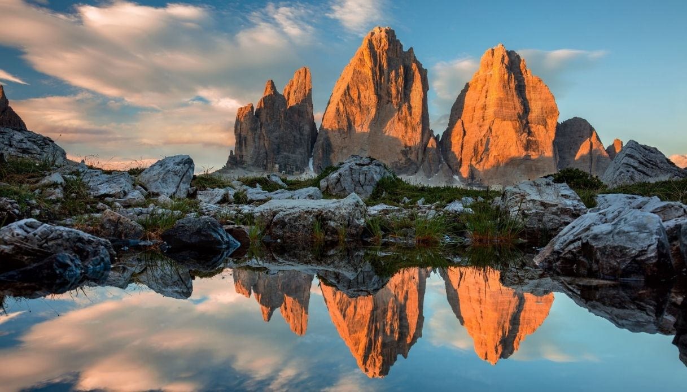

Patrimonio UNESCO con cime imponenti, fiori rari come la stella alpina e paesaggi rocciosi unici.
Il Parco Nazionale delle Dolomiti Bellunesi, istituito nel 1993, si estende per oltre 31.000 ettari nella regione del Veneto, abbracciando alcune delle aree più spettacolari delle Dolomiti, riconosciute come Patrimonio dell’Umanità UNESCO. Questo parco, situato interamente nella provincia di Belluno, è famoso per le sue imponenti formazioni rocciose, le valli incontaminate e una straordinaria biodiversità che lo rendono un gioiello naturalistico di fama mondiale.
Le Dolomiti Bellunesi sono celebri per la loro bellezza unica e per la varietà dei paesaggi. Il parco comprende una serie di massicci montuosi tra cui la Schiara, il Pizzocco e le Vette Feltrine, che raggiungono altezze superiori ai 2.500 metri. Le montagne sono caratterizzate da pareti verticali, guglie imponenti e vallate profonde, scolpite dall’erosione e dai ghiacciai che un tempo dominavano la zona.
Il Parco Nazionale delle Dolomiti Bellunesi è un rifugio per numerose specie animali, molte delle quali rare o protette. Tra i mammiferi, il camoscio alpino è una presenza caratteristica delle aree più alte, mentre il cervo e il capriolo popolano le zone boschive.
La presenza del gallo cedrone e del picchio nero testimonia la qualità dell’ecosistema forestale del parco. Tra i rapaci, l’aquila reale e il gufo reale dominano i cieli, mentre i piccoli abitanti delle rocce, come la marmotta, completano il quadro di una fauna ricca e diversificata. L’ambiente fluviale ospita la rara trota marmorata, simbolo dell’equilibrio ecologico delle acque del parco.
Il parco offre una vasta gamma di attività all’aria aperta, ideali per chi ama immergersi nella natura incontaminata. Con oltre 200 chilometri di sentieri, gli escursionisti possono scegliere tra percorsi di diverse difficoltà. Tra i più suggestivi c’è il Sentiero delle Farangole, che attraversa paesaggi alpini mozzafiato, e il Sentiero Dino Buzzati, un itinerario dedicato al celebre scrittore bellunese.
Gli appassionati di speleologia possono esplorare alcune delle grotte più affascinanti della zona, come la Grotta Azzurra, famosa per le sue suggestive sfumature di colore, mentre chi preferisce esperienze più rilassanti può optare per una passeggiata nelle Gole del Mis, tra cascate, piscine naturali e formazioni rocciose spettacolari.
In inverno, il parco offre opportunità per le ciaspolate e lo sci alpinismo, che consentono di vivere l’atmosfera magica delle Dolomiti innevate. Durante la primavera ed estate, il paesaggio si colora di fiori selvatici, rendendo i percorsi particolarmente pittoreschi.
La flora del parco è altrettanto affascinante, con una ricchezza botanica che lo rende un paradiso per gli appassionati di piante e fiori. Le Dolomiti Bellunesi ospitano circa 1.500 specie vegetali, alcune delle quali estremamente rare o endemiche. Tra queste spicca la Campanula Morettiana, una pianta che cresce esclusivamente sulle rocce dolomitiche, e la stella alpina, simbolo delle montagne alpine.
Le foreste del parco sono dominate da faggi, larici e abeti rossi, mentre nei prati alpini fioriscono gigli, orchidee e genziane. Le aree umide, come quelle delle Gole del Mis, ospitano piante acquatiche e muschi, creando microambienti di grande interesse naturalistico.
Il Parco Nazionale delle Dolomiti Bellunesi non è solo natura, ma anche storia e cultura. I villaggi che circondano il parco, come Feltre, Sospirolo e Cesiomaggiore, conservano un ricco patrimonio architettonico e tradizioni antiche. Questi borghi offrono la possibilità di visitare chiese, castelli e musei che raccontano la storia della regione.
L’eredità culturale del parco si riflette anche nei suoi prodotti tipici, come il formaggio Piave DOP e la polenta di mais Sponcio, un alimento tradizionale delle Dolomiti.
Il parco è un modello di conservazione ambientale e gestione sostenibile. Come parte del Patrimonio UNESCO, il Parco Nazionale delle Dolomiti Bellunesi è impegnato nella protezione della biodiversità e nella promozione di un turismo responsabile. Le attività umane, come il pascolo e la silvicoltura, sono regolate per minimizzare l’impatto sull’ambiente, garantendo un equilibrio tra uomo e natura.
Il parco è facilmente raggiungibile da Belluno e Feltre, con diversi punti di accesso che offrono informazioni turistiche e servizi per i visitatori. Tra questi, il Centro Visite di Pedavena e il Centro Visite La Santina, dove è possibile ottenere mappe, consigli sui percorsi e dettagli sugli eventi stagionali.
La primavera e l’autunno sono i periodi migliori per visitare il parco, grazie ai colori spettacolari della natura e al clima mite. Tuttavia, ogni stagione offre esperienze uniche, che vanno dal trekking estivo alle avventure invernali.